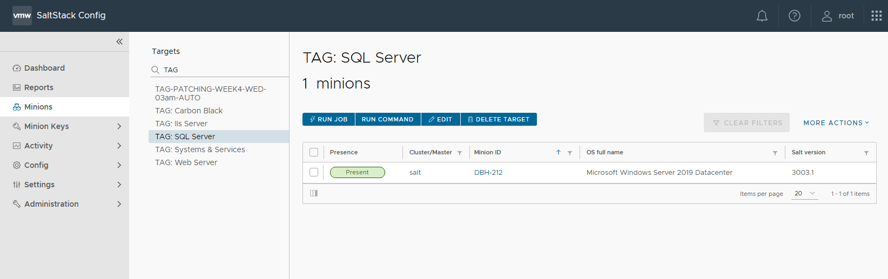
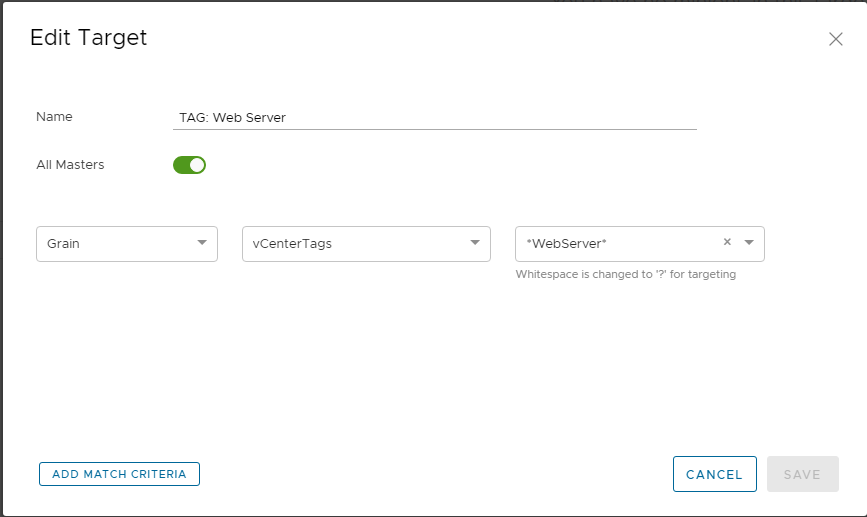
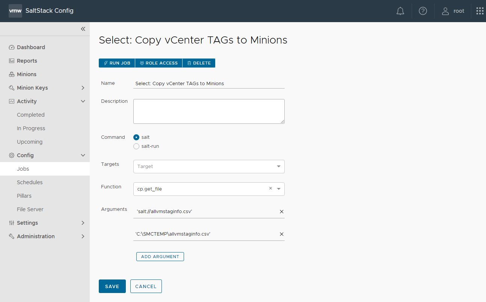
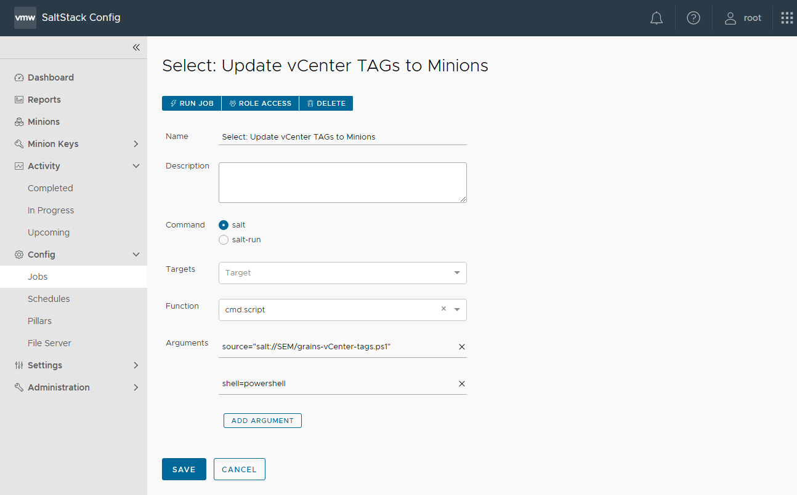
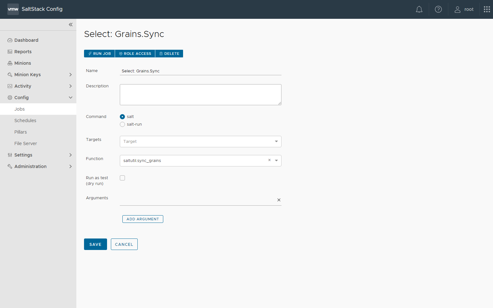
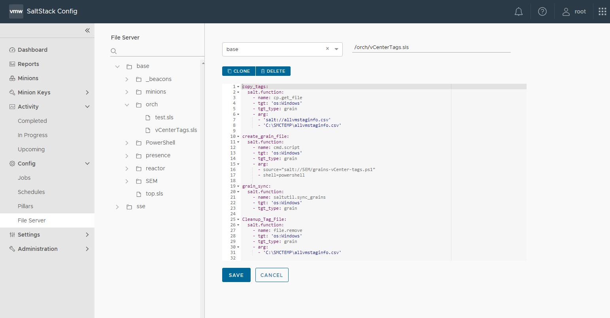
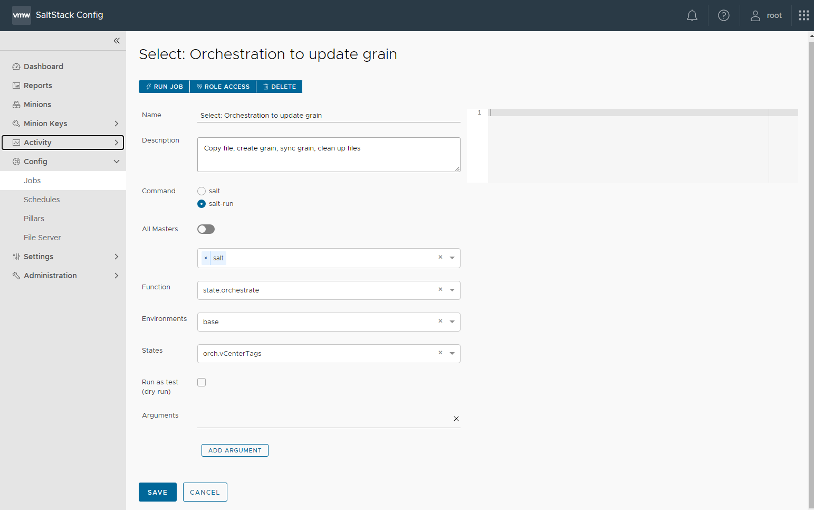

VMware vRealize SaltStack Config as a Windows Server Admin - Part 4

Part 4: How to use SaltStack Config with Windows Server and PowerShell
The latest item on my journey with VMware vRealize SaltStack Config as a Windows Server Admin will be salt grains. I have a specific use case that made me start looking at grains. In VMware vCenter I use vCenter TAGs to organize VMs. I also use vCenter TAGs to organize VMs in vRealize Operations. I want to use the same logic of using vCenter TAGs in SaltStack Config. SaltStack Config does not use vCenter TAGs OOTB (Out of the Box) for VMs.
At the end of this Blog Post I also have an SaltStack Config Orchestration example. Instead of running multiple Jobs one at a time I have (4) steps in a SLS file that I run using a salt-run job and the function state.orchestrate.
Grains File:
This is what I learned about salt grains when using with a Windows OS.
- The default location of the grains file is in directory "C:\salt\conf\".
- The grains file is named grains with no extension.
Example grains file:
vCenterTags: TAG-VM-vCROCS|TAG-VM-WebServer|TAG-App-Hugo- "Grain Name": "The value of the grain".
- In my example I wanted the grain to be named "vCenterTags" and the values will be the vCenter TAG names "TAG-VM-vCROCS|TAG-VM-WebServer|TAG-App-Hugo". I have (3) vCenter TAGs assigned to this VM. I will be able to create a SaltStack Config Target based on any of the TAGs.
SaltStack Config Targets:
When I add the vCenter TAG information to the grains file I am then able to create SaltStack Config Targets based on the grain "vCenterTags".
SaltStack Config Targets:

SaltStack Config Target Definition:

How to add the vCenter TAGs to the grains file on all your VMs in SaltStack Config:
Step 1: Get the VM Names and All Assigned vCenter TAGs into a csv file
Example PowerShell Code to get all vCenter VM Names and all vCenter TAGs assigned to the VMs
# ----- [ Start Create CSV File with all VMs/TAGs Assigned ] ----------------------------
# I did not include code to connect to the vCenter. There are many ways to do this step.
# Make sure you are connected to the vCenter BEFORE running this code.
$allvmstaginfoFile = "C:\Salt\allvmstaginfo.csv"
# Create Array
$allVMsTagInfo = @("")
# Add Headers to Array
$VMTagInfo = 'VM,TAGs'
$allVMsTagInfo += $VMTagInfo
# Get All VMs in you vCenter
$vmNames = Get-VM
$vmNames = $vmNames | Sort-Object Name
foreach($vmName in $VMNames){
# Get VM Tag(s)
$VMTags = Get-TagAssignment -Entity $vmName.Name
# If more than (1) TAG I will join them as a string with a '|' separating the values.
$VMtags = $VMTags.Tag.Name -join '|'
# Create a string with the VMname and all the vCenter TAGs assigned separated by a comma
$VMTagInfo = $vmName.Name + ',' + $VMTags
# Add Info to array
$allVMsTagInfo += $VMTagInfo
} # End Foreach
# Delete existing all VMs Tag csv File
Remove-Item -Path $allvmstaginfoFile
# Create new all VMs Tag csv File
New-Item $allvmstaginfoFile -ItemType File
# Add array Data to CSV file
$allVMsTagInfo | Select-Object -Skip 1 | Set-Content $allvmstaginfoFile
# ----- [ End Create CSV File with all VMs/TAGs Assigned ] ----------------------------Step 2: Copy the csv file to the salt master
After I create the csv file I copy to the StackStack Config Server (Salt Master) in the folder /var/srv/salt. This is where all files need to be saved when you use function cp.get_file.
Step 3: Copy the csv file to the salt minions
You may be wondering why I copy the file to the minion and not copy to a central share. My environment has NSX-T with zero trust. Most of my automation I do not open ports to servers that are not needed permanently. So the concept of using salt to copy files to minions, use the files to make changes and then delete the files when processes are complete works well in a zero trust environment.
Job to copy csv file to minions:

Step 4: Run Script on minion
After I copy the csv file to the minion I run a script to create/update the grains files.
Job to run a PowerShell Script to create/update the grains file:

Example PowerShell Code to create/update grains file on a minion:
# ----- [ Start Create Grain File with TAGs Assigned ] ----------------------------
$allvmstaginfoFile = "C:\vCROCS\allvmstaginfo.csv"
$grainTagInfo = Import-Csv $allvmstaginfoFile
$vmName = hostname
$grainsFile = "C:\salt\conf\grains"
if (Test-Path $grainsFile) {
# Remove existing vCenter Tags
$grainsContent = Get-Content $grainsFile
$grainsContent = $grainsContent | Where-Object {$_ -notmatch "vCenterTags:"}
# If Only grain is vCenter Tags then Delete the grains file and re-create
if(!$grainsContent){
Remove-Item -Path $grainsFile
New-Item $grainsFile -ItemType File
} # End If
else{
$grainsContent | Set-Content $grainsFile -Force
} # End Else
#Get VM Tag(s)
$grainfileinfo = $grainTagInfo | Where-Object {$_.VM -eq $vmName}
$VMTagInfo = 'vCenterTags: ' + $grainfileinfo.TAGs
Add-Content $grainsFile $VMTagInfo -Force
} # End If
else{
# Create grains file
New-Item $grainsFile -ItemType File
#Get VM Tag(s)
$grainfileinfo = $grainTagInfo | Where-Object {$_.VM -eq $vmName}
# Define Tags String
$VMTagInfo = 'vCenterTags: ' + $grainfileinfo.TAGs
# Add Tags to grains file
Add-Content $grainsFile $VMTagInfo -Force
} # End else
# ----- [ End Create Grain File with TAGs Assigned ] ----------------------------Step 5: Run job to do a sync_grains
Anytime you make any changes to the grains file you should run the function saltutil.sync_grains to update the SaltStack Config Server immediately.
Job to run sync of the minion grains information:

SaltStack Config Orchestration:
Job to Orchestrate all the steps:
- Copy file to minion.
- Run script to create/update grains file
- Run a sync_grains.
- Delete the files from the minions when processes are complete.

Example Orchestration SLS file:
copy_tags:
salt.function:
- name: cp.get_file
- tgt: 'os:Windows'
- tgt_type: grain
- arg:
- 'salt://allvmstaginfo.csv'
- 'C:\vCROCS\allvmstaginfo.csv'
create_grain_file:
salt.function:
- name: cmd.script
- tgt: 'os:Windows'
- tgt_type: grain
- arg:
- source="salt://SEM/grains-vCenter-tags.ps1"
- shell=powershell
grain_sync:
salt.function:
- name: saltutil.sync_grains
- tgt: 'os:Windows'
- tgt_type: grain
Cleanup_Tag_File:
salt.function:
- name: file.remove
- tgt: 'os:Windows'
- tgt_type: grain
- arg:
- 'C:\vCROCS\allvmstaginfo.csv'Salt-Run Job to Orchestrate Copy File/Run Script/Run Sync/Delete File:

Lessons Learned:
- Grains are a good way to create SaltStack Config Targets. Allows you to group VMs together the same way you can in vCenter.
- The Grains file is basically a Database that can be any information that you want to show about your VMs. In this Blog post I am adding vCenter TAGs to the minions but the information could be anything that helps you target VMs.
- If the default list of grains OOTB doesn't show the information you want to see, you can easily add your own gains with a little bit of code.
Salt Links I found to be very helpful:
- SaltStack Cheat Sheet
- SaltStack Tutorials
- SaltStack Documentation
- SaltStack Community Slack Channel
- Learn vRealize Automation
- Learn SaltStack Config
When I write about vRealize Automation ("vRA") I always say there are many ways to accomplish the same task. SaltStack Config is the same way. I am showing what I felt was important to see but every organization/environment will be different. There is no right or wrong way to use Salt. This is a GREAT Tool that is included with your vRealize Suite Advanced/Enterprise license. If you own the vRealize Suite, you own SaltStack Config.
- If you found this Blog article useful and it helped you, Buy me a coffee to start my day.